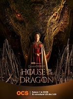

Nous sommes le {{jour}}
Je suis {{ nom }} et voici mon premier site web !
L'histoire de la famille Targaryen, près de 200 ans avant les événements de "Game Of Thrones". Alors que le Roi Viserys règne sur Westeros, la question de sa succession inquiète. Sans progéniture mâle, qui prendra sa suite ?
Avec pas moins de 10 dragons adultes sous leur contrôle, les Targaryen dominent le Royaume des Sept Couronnes depuis fort longtemps. La seule puissance capable de les renverser est la Maison Targaryen elle-même.
Les tensions, trahisons et jalousies qui secouent le clan en interne leur seront-elles fatales ?
Vous pouvez retrouver les séries sorties en 2022 classées par genre:
GenresFramework Computer est un fabricant américain d'ordinateurs portables, dont les appareils sont conçus pour être facilement démontables et leurs pièces remplaçables. L'entreprise défend le droit à réparer les appareils électroniques. Son approche a été saluée par Louis Rossmann, Linus Sebastian et Cory Doctorow.